Introduction
Hello, my name is Tyler Ryan. I am a senior DNID major with a heavy focus on Game
Design.
The project I am showcasing today is Gemz.
Gemz is a factory-simulation game set in the far-future in an interplanetary environment. Players
mine and refine gems
on various planets while managing factory layouts and trading with alien factions to build a
thriving econonomy.
Gemz combines resource management, strategy, and exploration, where players expand factories,
automate processes,
and engage in ethical dilemmas related to resource exploitation.
In Gemz, players experience mechanics inspired by games like Factorio and Shapez 2, focusing on
automation and
resource management while balancing planetary exploitation with economic growth.
Genre: Strategy, Simulation
Engine: Unity3D
FYI: Most headers on this page can be clicked on for easier navigation.
-
Gameplay Mechanics
-
Story & Characters
-
Art
-
Demographic
-
Timeline
-
Deliverables
Gameplay Mechanics
-

Movement
The player controls a flight-enabled camera that can maneuver freely in all directions—forward, backward, left, right, up, and down. The movement system provides full 3D control, giving players the ability to explore the environment from any angle. Players can adjust the camera speed by scrolling the mouse wheel, allowing for fine-tuned control when navigating close spaces or zooming out for a broader view of their expanding factory. Speed can range between 5 and 50 units, depending on the player's preference, enabling both slow and precise movements, or fast traversal over large areas.
-
Tile Placement
Gemz operates on a tile-based grid system for factory construction and resource management. Players place tiles to build conveyor belts, mining stations, and other essential components of their factory. Each tile must align with the grid, ensuring a structured and organized layout. The snapping system allows for seamless placement, avoiding errors in positioning. Additionally, certain buildings or machines can only be placed after unlocking technologies, adding a layer of strategy to the construction process as players must balance resources and available space effectively.
Gameplay Mechanics Continued
-

Trade & Economy
The trade and economy system is key to success in Gemz. Players establish trade routes with alien factions across planets, negotiating resource deals. Prices fluctuate based on scarcity, supply, and demand, requiring strategic planning to profit from market trends and avoid financial loss. Strong faction relationships unlock rare materials and technologies, enhancing factory production. Profits can be reinvested to expand factories or upgrade machinery for increased efficiency.
-
Resource Management
Players must manage the resources they mine and refine, while confronting ethical dilemmas tied to resource exploitation. Extracting gems from planets involves refining and transportation costs, with market fluctuations impacting profits. Over-mining risks depleting resources, destabilizing ecosystems and alien factions.
Players must choose between short-term gains or sustainable methods, with their decisions affecting relationships with alien species and the long-term stability of their interplanetary empire.
Story and Setting
- Current Planet: Elyssia
- Year: 3127
Long ago, as Earth faced environmental collapse and dwindling resources, humanity embarked on a
bold mission to secure its survival. Led by the LEAP Foundation (League of Earth's Advancement
and Progress), they sought not just to escape Earth but to find a new world where humanity could
rebuild. After years of searching the stars, they finally discovered Astralis Prime, a vibrant
planet offering hope and a future for the human race.
Astralis Prime became humanity’s heart of expansion, but it wasn’t the only world they found.
During their journey, LEAP discovered Elyssia, a lush, resource-rich planet. With untouched
forests and valuable minerals, it quickly became key to humanity’s plans for survival and growth
in the galaxy.
However, settling Elyssia came with challenges. The planet’s wealth attracted alien
civilizations like the Neblitarians and Va'Kara, leading to complex diplomatic relationships.
Humanity now faces a struggle for control over Elyssia's resources, navigating between
cooperation and conflict with these factions.
Conflict
The race to control Elyssia’s resources has led to fierce competition and environmental degradation, forcing players to choose between exploiting the planet’s wealth or preserving its fragile ecosystem. Their decisions will shape the fate of the planet and their relationships with other factions.
Factions
Interacting with Elyssia’s alien factions can lead to a range of outcomes, from forming alliances
that boost your resource collection and technology, to sparking conflicts that can destabilize
the planet’s economy.
Players must navigate these relationships carefully, balancing their own
growth with the needs and ambitions of competing factions.
Art
The art style in Gemz features a medium-to-low poly aesthetic, blending elements of realism with a cartoonish, futuristic twist. Every asset is handcrafted in Blender, maintaining a clean, geometric look that represents reality while offering a unique and playful visual style. The colors and shapes evoke a futuristic world without overwhelming detail, giving the game a distinctive charm that is both approachable and imaginative.
Conveyer Belt Model
Raw Ore Model
Various Gems Models
Target Audience
YOU.
If you're someone who cares about climate change, resource exploitation, and the depletion of Earth's natural resources, then *Gemz is a game that will resonate deeply with you. It tackles these pressing global issues through engaging gameplay, forcing players to balance the desire for economic growth with the importance of preserving the environment. The game's message encourages thoughtful decision-making, illustrating the impact of exploitation and resource management on both planets and their ecosystems.
ENTHUSIASTS.
Gemstone enthusiasts are offered an exciting world where they can mine, refine, and trade precious gems, with unique mechanics designed to bring out the allure of these resources. Additionally, fans of factory simulation and strategy games will find deep satisfaction in the game's complex systems of automation, where efficiency, growth, and sustainability are key to building a thriving interplanetary empire.
Timeline
Deliverables
4 Gem Types
3 Mining Objects
Working Economy System
Technology Perk Tree
One Level
Accessibility
Colorblind Mode
Subtitles
Customizable Controls
Tutorial & Hints
Menu Narration Options